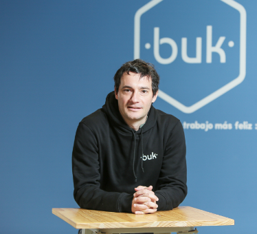

Beneficios de tener al colaborador en el centro 1
¡Bukcast, el podcast de Buk! Escucha la primera temporada donde conversaremos los temas más contingentes sobre “Bienestar Organizacional”. Con este podrás tener las claves para tener colaboradores más felices en su lugar de trabajo.